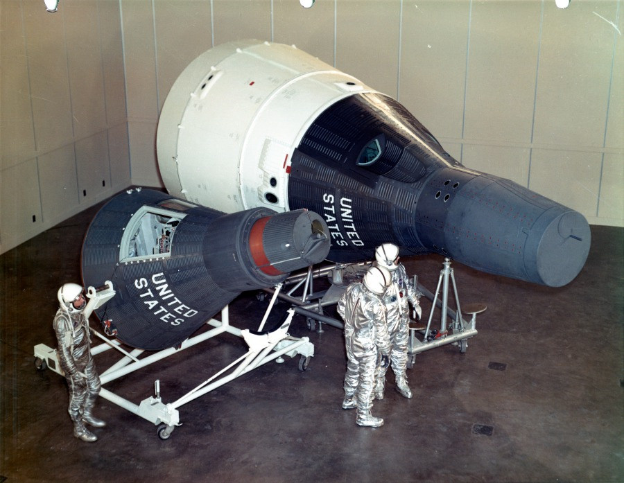
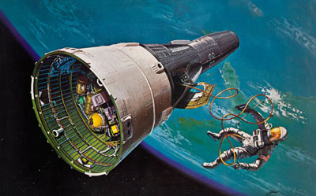

El Proyecto Gemini fue el segundo programa espacial tripulado de la NASA, desarrollado entre 1961 y 1966, con el objetivo de perfeccionar las habilidades necesarias para que los astronautas pudieran realizar un viaje a la Luna, como parte del posterior Programa Apolo. Gemini fue el puente crítico entre el modesto pero pionero Proyecto Mercury y el ambicioso reto del alunizaje. Su nombre, que significa “gemelos” en latín, hacía referencia al hecho de que la cápsula estaba diseñada para transportar a dos astronautas, a diferencia del Mercury, que solo albergaba a uno.
La misión del Proyecto Gemini consistía en llevar a cabo una serie de vuelos espaciales que pusieran a prueba tecnologías clave que serían indispensables para el éxito de una futura misión lunar. Entre sus objetivos principales estaban: realizar caminatas espaciales (EVA, por sus siglas en inglés), practicar maniobras de encuentro y acoplamiento entre dos naves en órbita, probar los efectos de largos períodos de permanencia en el espacio sobre el cuerpo humano, y controlar con precisión la reentrada de la nave en la atmósfera terrestre. Estos objetivos eran técnicamente complejos y no se habían intentado nunca antes.
La cápsula Gemini era más grande y avanzada que su predecesora. Incluía sistemas de propulsión para maniobras orbitales, mayor capacidad de soporte vital, y controles de vuelo que permitían a los astronautas pilotar activamente la nave. También contaba con un sistema para acoplarse con otro vehículo en el espacio, como el Agena Target Vehicle, usado en varias misiones para simular encuentros orbitales que luego serían esenciales para el módulo de mando y el módulo lunar del Programa Apolo.
Entre 1965 y 1966 se realizaron 10 vuelos tripulados del Proyecto Gemini, todos exitosos en términos de sus metas principales. Uno de los hitos más importantes fue el realizado durante la misión Gemini IV, cuando el astronauta Ed White realizó la primera caminata espacial (EVA) estadounidense, en junio de 1965. Otro logro crucial fue alcanzado por Gemini VIII, con Neil Armstrong al mando, quien realizó el primer acoplamiento exitoso entre dos vehículos espaciales en órbita, aunque la misión enfrentó una emergencia que obligó a un regreso prematuro.
El Proyecto Gemini también fue vital para entender la resistencia humana a largas estadías en el espacio. Las misiones Gemini VII y Gemini VI-A realizaron un vuelo conjunto en el que dos cápsulas estuvieron en órbita simultáneamente, y Gemini VII permaneció en el espacio durante 14 días, demostrando que los astronautas podían soportar físicamente la duración de un futuro viaje a la Luna. Estos ensayos médicos y técnicos demostraron que Estados Unidos estaba preparado para enfrentar el reto del alunizaje.